A 2022. és a 2026. évi aszály összehasonlítása
Szerző: Nemes Miklós
Témafelvetés
Szomorú aktualitással vált ismét beszédtémává az aszály. A szántóföldi és kertészeti kultúrák egyaránt megsínylették a 2025/2026-os évjáratot, a csapadékhiány gyakorlatilag egyetlen kultúrát sem hagyott érintetlenül. Az őszi kalászosok sem hozták mindenütt a tőlük elvárható eredményeket, a tavaszi vetésű kultúrák pedig már a nyár közepén komoly aggodalomra adtak okot. Az Alföldön júliusban sem volt nehéz teljesen elszáradt kukoricaállományokat találni; augusztus végére pedig az öntözés nélkül termesztett állományok jelentős része kényszerérett vagy teljesen felszáradt.
Egy határszemle óvhatatlanul a 2022-es évjáratot idézi. Kisült táblák, kiszáradt ruderáliák, szomjazó határ – a hasonlóság szembetűnő. Adódott tehát a kérdés: 2022 vagy 2026 volt aszályosabb év?
Ebben a munkában az aszályt, nem csak, mint csapadékhiányt kezelem, hanem mint a szántóföldi és kertészeti kultúrák szempontjából fennálló összetett vízhiányos állapotot jellemzem. Megítélésében ezért a csapadék, a légkör párologtató igénye, a hőterhelés, a talajnedvesség és a növényi vízigény együttes vizsgálatára támaszkodunk.
Ahhoz azonban, hogy erre ne egyszerűen megérzések és benyomások alapján válaszoljunk, a látvány és az emlékeink helyett a rendelkezésre álló adatokat kell megvizsgálnunk. Nem elég azt megállapítani, hogy egy adott helyen melyik évben érkezett kevesebb csapadék. Figyelembe kell venni azt is, hogy mikor érkezett a csapadék, mekkora volt közben a légkör párologtató igénye, mely fejlődési szakaszban érte a növényt a vízhiány, milyen hőterhelés társult hozzá, mennyi ideig tartottak az egybefüggő száraz periódusok, és végül mindez hogyan jelent meg a talaj tényleges nedvességi állapotában, valamint a hozamokban.
Ennek az írásnak az a célja, hogy megvizsgálja, a két kritikusan száraz évjárat közül 2022 vagy 2026 jelentett-e nagyobb meteorológiai és agronómiai terhelést a szántóföldi növénytermesztés számára.
A szövegben bemutatott következtetések az adatokra épülő szakmai értékelésem. Megállapításai a kiválasztott 12 mintapontra és a két vizsgált évjáratra vonatkoznak; országos reprezentativitást és hosszú távú éghajlati tendenciát nem jelentenek. A számított csapadék–ETc deficit meteorológiai ellátási rés, a REW a mért talajnedvesség helyzetét mutatja a térképi becslésből származó talajhidrológiai határokhoz képest. Ezeket növénytermesztési tapasztalatokkal együtt értelmezem, nem a tényleges növényi vízfogyasztás vagy a teljes gyökérzóna vízmérlegének méréseként. A termésadatok megyei átlagokból származnak, a 2026-os értékek időköziek; összevetésük az évjárat értékelését szolgálja, az aszály önálló hozamhatását nem számszerűsíti.
Kulcsszavak
aszály, meteorológiai terhelés, evapotranszspiráció, talajnedvesség, termésátlag
Módszer
A vizsgálat nem egyetlen mutatószám vagy hozamadat összehasonlítására épül. Figyelembe veszi az éven belüli csapadékeloszlást, a különböző kultúrnövények fejlődési állapothoz igazított vízigényét, a légkör párologtató igényét, a hőstressz mértékét és időtartamát, a száraz periódusok hosszát, valamint a talaj nedvességi állapotát.
A referencia-evapotranszspirációt (ET₀) a FAO–56 Penman–Monteith módszerével számítottam. A számítás a sugárzási viszonyok mellett a levegő hőmérsékletét és relatív páratartalmát, a szélsebességet és a légnyomást is figyelembe veszi. Az ET₀ a meteorológiai körülmények által meghatározott párologtatás vízigényét jellemzi.
Az egyes kultúrák becsült vízigényét az ET₀ és a fejlődési állapotukhoz rendelt Kc növényi együttható segítségével határoztam meg. A két év összehasonlíthatósága érdekében minden kultúránál egyformán egy-egy standardizált vetési és fenológiai naptárt alkalmaztam. Így például egy aszály következtében idő előtt felszáradt állomány nem csökkenthette mesterségesen a számított potenciális vízigényt.
A meteorológiai számításokat kiegészítettem a talaj állapotának vizsgálatával is. Az OVF (Országos Vízügyi Főigazgatóság) Aszálymonitoring állomásainak 10, 20, 30, 45, 60 és 75 cm mélységben mért talajnedvességi adatait ugyanazon földrajzi pontokra vonatkozó HU-SoilHydroGrids talajhidrológiai adatokkal vetettem össze. Így a mért térfogati talajnedvesség nem önmagában, hanem az adott talaj szabadföldi vízkapacitásához és hervadáspontjához viszonyítva is értelmezhető.
A számított csapadék–ETc különbséget és a mért talajnedvességet külön adatsorként értékelem. A beszivárgás, a felszíni lefolyás, a mélybeszivárgás, a kapilláris vízutánpótlás és a változó gyökérmélység folyamatait a számítás nem modellezi.
A vizsgálat ezért két, egymást kiegészítő irányból közelíti meg a vízellátási helyzetet.
Az első a meteorológiai–növényi megközelítés. Ha ismerjük az adott mintapont meteorológiai viszonyait, valamint az egyes kultúrák fejlődési állapothoz igazított becsült vízigényét, akkor naponta összevethető a csapadékból származó vízellátás és a kultúra becsült evapotranszspirációs igénye.
A számítás alapja a lehullott csapadék és a kultúra becsült evapotranszspirációs vízigénye, az ETc közötti meteorológiai ellátási rés.
Ha egy adott időszakban az ETc tartósan meghaladja a lehulló csapadékot, az ellátási rés növekszik. Egy nagyobb csapadékesemény ezt mérsékelheti vagy akár meg is szüntetheti. A napi különbségek kumulálásával így követhető, hogyan épül fel, illetve hogyan csökken a csapadék–ETc deficit az adott kultúra tenyészideje során.
A vizsgálatban két ehhez kapcsolódó mutatót használtam. A maximális kumulált deficit (mm) azt mutatja meg, hogy a tenyészidőszak során mekkora volt a csapadék és a becsült vízigény közötti legnagyobb felhalmozódott ellátási rés. A deficitterület (mm-nap) pedig a hiány nagyságát és fennállásának időtartamát együttesen jellemzi. Így két, azonos maximális deficitet elérő időszak között is különbséget lehet tenni attól függően, hogy a vízhiány rövid ideig vagy tartósan állt fenn.
A második irány a talajnedvességi megközelítés. Az OVF által mért térfogati talajnedvességet az adott mintapontra és mélységre jellemző szabadföldi vízkapacitás (FC) és hervadáspont (WP) között helyeztem el.
Ehhez a HU-SoilHydroGrids hat talajmélységi rétegben rendelkezésre álló FC- és WP-értékeit az OVF szenzorainak mérési mélységéhez illesztettem. Mivel a két rendszer mélységi felosztása nem azonos, a talajhidraulikai értékeket a rétegek középmélysége között lineárisan interpoláltam a 10, 20, 30, 45, 60 és 75 cm-es szenzormélységekre.
A mért talajnedvesség relatív helyzetének jellemzésére a következő mutatót használtam:
REW = (θ – WP) / (FC – WP)
ahol θ a mért térfogati talajnedvesség.
REW = 1 esetén a mért talajnedvesség eléri a szabadföldi vízkapacitást, REW = 0 esetén pedig a hervadáspontot. Minél kisebb a REW értéke, annál szárazabb, kedvezőtlenebb talajnedvességi állapotot jelez az adott talaj saját víztartó tulajdonságaihoz viszonyítva.
Az 1 feletti és a 0 alatti nyers REW-értékeket megtartottam: ezek a mért víztartalom helyzetét mutatják a becsült talajhidraulikai határértékekhez képest. A mutató az eltérő talajtípusok nedvességi állapotának összevetését szolgálja. A növényi stressz küszöbe a kultúrától, a gyökérzettől és a párologtatási igénytől is függ, ezért a REW-hez nem rendeltem egységes stresszkategóriákat.
Az OVF meteorológiai adatokból számított aszályindexét harmadik monitoringjelzésként használom. Az indexet külön vetem össze a csapadék–ETc deficit és a talajnedvesség alakulásával.
Az elemzés logikája ezért már nem egyetlen számítási láncból áll, hanem három egymást kiegészítő nézőpontból.
Meteorológiai–növényi oldal:
csapadék → ET₀ → Kc → ETc → csapadék–ETc ellátási rés → maximális kumulált deficit → deficitterület
Talajállapot oldal:
mért OVF-talajnedvesség → HU-SoilHydroGrids FC és WP → relatív talajnedvességi állapot (REW)
Külön monitoring-összehasonlítás:
OVF aszályindex
A három eredménysort ezután egymással is összevetem. Ha a meteorológiai deficit, a mért talajállapot és az OVF aszályindex azonos irányú változást jelez, az erősíti az adott következtetést. Ha eltérnek egymástól, annak oka önmagában is fontos lehet. Ilyen eltérést okozhat például a korábban felhalmozott talajnedvesség-készlet, a talaj eltérő víztároló képessége, a csapadék időbeli eloszlása vagy az, hogy a különböző adatforrások nem teljesen azonos folyamatot írnak le.
Az elemzés során végig különválasztom a közvetlenül mért adatokat, a térbeli interpolációval előállított értékeket, a modellel számított mutatókat és az ezekből levont agronómiai következtetéseket. Hiányzó adatot nem tekintek nullának, és részleges adatsort nem kezelek teljes értékű összehasonlításként. Ha a két év valamely adatforrásnál eltérő időbeli lefedettségű, az összehasonlítást csak azonos módon értékelhető időszakokra végzem el. Ez különösen fontos az OVF talajnedvességi adatok esetében, ahol a rendelkezésre álló érvényes napok száma mintapontonként és évjáratonként eltérhet.
Adatforrások és a vizsgálati hálózat
A meteorológiai elemzés alapját a HungaroMet automata meteorológiai állomásainak 10 perces mérési adatai képezik. Ezekből származik a csapadék, a hőmérséklet, a relatív páratartalom, a szélsebesség, a légnyomás és a globálsugárzás.
A vizsgálathoz 12, az ország különböző térségeiben elhelyezkedő földrajzi mintapontot választottam. A kiválasztás nem önkényes volt. Csak azok az állomások jöhettek szóba, ahol a magamnak, kifejezetten erre a projektre felállított adatminőség megvolt. További szempont volt még, hogy az ország nagytérségei közül lehetőleg mindegyiken legyen legalább egy földrajzi mintapont. Ezek a pontok az OVF Aszálymonitoring állomásainak helyéhez kapcsolódnak. A mintapontok nem önálló HungaroMet mérőállomások: a hozzájuk tartozó napi meteorológiai értékeket a környezetükben található automata állomások mérési adataiból számítottam.
Egy-egy napon és meteorológiai változónál legfeljebb nyolc megfelelő adatminőségű, közeli HungaroMet automata állomás adata került felhasználásra. A mintaponti érték meghatározása távolsággal súlyozott térbeli interpolációval (IDW) történt, vagyis a közelebbi állomások mérései nagyobb súllyal járultak hozzá a számított értékhez. Amennyiben valamely állomás napi adatsora nem felelt meg az előre meghatározott minőségi követelményeknek, az adott napi számításból kimaradt, ezért a ténylegesen felhasznált állomáskészlet időben és meteorológiai változónkként is eltérhetett.
A meteorológiai adatok mellett az OVF Aszálymonitoring talajnedvességi és aszályindex-adatait is felhasználtam. A talajnedvesség 10, 20, 30, 45, 60 és 75 cm mélységben áll rendelkezésre, térfogati víztartalom formájában. Az OVF aszályindexét külön monitoringmutatóként kezelem: nem építem bele a HungaroMet-adatokból számított meteorológiai deficitbe, hanem külön ellenőrzési és összehasonlítási rétegként használom.
1. ábra A 12 vizsgálati mintapont és a környezetükben található HungaroMet automata meteorológiai állomások elhelyezkedése.
Az önmagában megadott térfogati víztartalom azonban csak korlátozottan értelmezhető. Ugyanaz a 20 térfogatszázalékos talajnedvesség egy homoktalajon vagy egy kötött réti talajon egészen más növényi vízellátottsági állapotot jelenthet. Ezért a 12 mintapontra a HU-SoilHydroGrids 100 méteres felbontású talajhidrológiai adatbázisából is lekértem a maximális vízkapacitás, a szabadföldi vízkapacitás és a hervadáspont becsült értékeit hat talajmélységi rétegben.
Bevezetés
Sokkal egyszerűbben is le lehetne tudni a kérdést, hogy melyik évjárat volt a szárazabb. Összesítjük a földrajzi mintapontokon lehullott csapadék mennyiségét, a végeredményeket összevetjük, és előáll egy egyszerű különbség valamelyik év javára vagy kárára.
De miért nem elegendő egyszerűen a csapadékadatokból kiindulni?
A szántóföld, mint ökoszisztéma éppen olyan összetett rendszer, mint bármely más, élőlények által benépesített terület. A különbség a növényi diverzitásban van: szántóföldjeinken jellemzően egy-egy kultúrnövény uralja a területet. Éppen ez teszi lehetővé, hogy a növény sajátos tulajdonságait, vízigényét, fejlődési állapotát, valamint a meteorológiai körülményeket figyelembe véve megbecsüljük egy adott kultúra vízellátási helyzetét.
Így nemcsak azt tudjuk vizsgálni, hogy elegendő csapadék érkezett-e a területre, hanem azt is, hogy akkor érkezett-e, amikor a növénynek valóban szüksége volt rá.
Első lépésként összesítettem a vizsgált időszakban lehullott csapadék mennyiségét. Mivel a számítás alapját 10 perces mérési adatok jelentik, ezekből napi, havi, évszakos és végül a teljes, 365 napos meteorológiai időszakra vonatkozó csapadékösszegek készültek.
Ugyanezen automata meteorológiai állomások adataiból meghatároztam a napi hőmérsékleti viszonyokat, a relatív páratartalmat, a szélsebességet, a légnyomást és a globálsugárzásból származó energiát. Ezekből a FAO–56 Penman–Monteith módszerrel számítható a referencia-evapotranszspiráció, azaz az ET₀.
Az ET₀ a légkör párologtató igényét fejezi ki: azt mutatja meg, hogy az adott meteorológiai körülmények között egy megfelelően vízellátott referencia-növényállomány mennyi vizet veszítene párolgás és növényi párologtatás révén.
Nyolc, Magyarországon általánosan termesztett kultúrnövényhez határoztam meg a fejlődési állapotukhoz tartozó Kc növényi együtthatókat. A Kc azt fejezi ki, hogy az adott kultúra vízigénye az adott fejlődési szakaszban milyen arányban tér el a referencia-növény vízigényétől.
A Kc értéke a növény fejlődése során változik. Egy kelőfélben lévő, kis levélfelületű növény vízigénye lényegesen kisebb lehet, mint egy teljes lombfelületét elért, intenzíven párologtató állományé.
Az ET₀ és a Kc ismeretében meghatározható az adott kultúra becsült evapotranszspirációja, az ETc:
ETc = ET₀ × Kc
Vagyis leegyszerűsítve:
a kultúra becsült vízigénye = a meteorológiai körülmények által meghatározott referencia-vízigény × a növény fejlődési állapotához tartozó együttható.
A számított ETc egy megfelelő vízellátottságú, standard növényállomány meteorológiai körülményekből becsült vízigényét jellemzi.
A vizsgálatot hőstressz-mutatókkal is kiegészítettem. Meghatároztam a hőségnapok (Tmax ≥ 30 °C) és a forró napok (Tmax ≥ 35 °C) számát, az egymást követő hőségnapokból kialakuló hőstresszes periódusok hosszát, valamint az ezek alatt lehullott csapadék mennyiségét.
Ha a vizsgált időszakban lehulló csapadék tartósan elmarad az ETc által jelzett vízigénytől, csapadék–ETc ellátási rés alakul ki. Ennek nagysága és tartóssága már nemcsak azt mutatja meg, hogy mennyire volt száraz egy időszak, hanem azt is, hogy a szárazság mekkora potenciális terhelést jelentett az adott kultúra számára. Minél nagyobb a kumulált csapadék–ETc deficit és a deficitterület, annál kedvezőtlenebb és tartósabb meteorológiai vízellátási helyzet rajzolódik ki.
A talaj a korábbi időszakokból származó vizet is tárolja. Két azonos mennyiségű csapadékot kapó terület vízellátottsága ezért a talaj eltérő vízgazdálkodási tulajdonságai és induló vízkészlete miatt jelentősen különbözhet.
Ezért a meteorológiai mutatók mellett az OVF által ténylegesen mért talajnedvességet is megvizsgáltam. A mért talajnedvességi értékeket az adott mintapontra jellemző szabadföldi vízkapacitáshoz és hervadásponti víztartalomhoz viszonyítottam. Ezzel a csapadék és a számított növényi vízigény mellett egy harmadik oldalról is vizsgálhatóvá válik ugyanaz a folyamat: mit mutatott maga a talaj?
A vizsgált időszakok és adatminőség
A meteorológiai vizsgálat két, egyenként 365 napos időszakra terjed ki, amelyek négy naptári évet érintenek: 2021–2022-t és 2025–2026-ot. Erre azért volt szükség, hogy az őszi vetésű kultúrák fejlődése már a vetési időszaktól kezdve vizsgálható legyen.
A két összehasonlított meteorológiai időszak:
2021. szeptember 1. – 2022. augusztus 31.
2025. szeptember 1. – 2026. augusztus 31.
Az augusztus 31-i záródátum azonos hosszúságú, 365 napos időszakokat biztosít, és egyben lefedi a vizsgált kultúrák döntő részének termesztési időszakát.
Az OVF talajnedvességi és aszályindex-adatainak feldolgozása mindkét évjáratban szeptember 1-jétől augusztus 27-éig terjed, vagyis 361 napot fed le. A talajállapot mutatóit ebben az azonos hosszúságú időablakban hasonlítom össze. A feldolgozott időszakok: 2021. szeptember 1. – 2022. augusztus 27. és 2025. szeptember 1. – 2026. augusztus 27.; zárónapjuk négy nappal megelőzi a meteorológiai főelemzését.
A két időszakra a 12 földrajzi mintapont környezetében található HungaroMet automata meteorológiai állomások adatait gyűjtöttem össze. A mintapontok napi meteorológiai értékeinek meghatározásakor legfeljebb nyolc, az adott napon és az adott meteorológiai változó esetében megfelelő adatminőségű közeli állomás vett részt a távolsággal súlyozott térbeli interpolációban.
A feldolgozás során a hiányzó mérési adatot nem tekintettem automatikusan nulla értéknek. Egy HungaroMet állomás napi adata csak akkor kerülhetett be a számításba, ha az adott napon az elvárt 10 perces rekordok legalább 95%-a rendelkezésre állt, és a leghosszabb összefüggő belső adathiány nem haladta meg a 60 percet. A mintapont napi meteorológiai értékének kiszámításához legalább három megfelelő adatminőségű közeli állomásra volt szükség.
Az OVF talajnedvességi adatai esetében szintén adatminőségi feltételt alkalmaztam. A talajnedvességet óránként mérő adatsorból képzett napi átlag csak legalább 23 rendelkezésre álló órás mérés esetén került felhasználásra. A hiányos napokat külön jelöltem, és ezekből további talajnedvességi mutatót nem számítottam. Az OVF aszályindex esetében legalább egy napi rekord szükséges.
Eredmények
A témából adódóan először a mintahelyeken lehullot csapadék mennyiségét vizsgáltam meg. Ez egy olyan adat, ami már önmagában is jól jellemzi az aszályt, mint jelenséget.
A 12 mintapont eltérő különbségeket mutat, és csak a katymári eredmények haladják meg a 2022-es csapadékösszegeket, ott is csak 1,1%-kal.
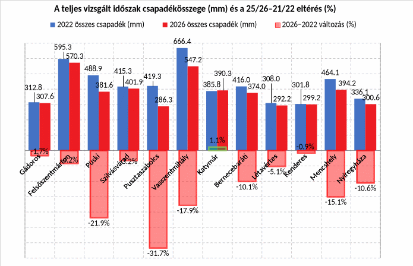
2. ábra 21/22 és 25/26 csapadékösszegei és ezek eltérése 25/26-ban (Adatforrás: HungaroMet automata meteorológiai állomásainak 10 perces mérési adatai; grafikon: saját szerkesztés)
Szembeötlő, hogy a legnagyobb csökkenéseket a dunántúli mintapontokon lehetett kimutatni, innen került ki ’26 legnagyobb csökkenését elszenvedő mintapont is, Pusztaszabolcs, a maga közel egyharmados csökkenésével. Ugyanakkor azt is meg tudjuk állapítani, hogy az alföldi mintapontok esetében nincs akkor változás ’22-höz képest. Ez a tény az én olvasatomban azt jelenti, hogy ’22 már annyira száraz évjárat volt, hogy ’26 csak kis mértékben tudta alulmúlni.
Mivel a vizsgált időszak mindkét évjárat esetében szeptember 1. és következő év augusztus 31. voltak, az adatok az őszi és tavaszi vetésű növények igényeit, illetve azok eltéréseit nem szemléltetik. Ezért volt szükséges havi bontásban is összehasonlítani a két évjárat csapadékviszonyait. Az összehasonlítások a 12 földrajzi mintapont átlagai alapján készültek.
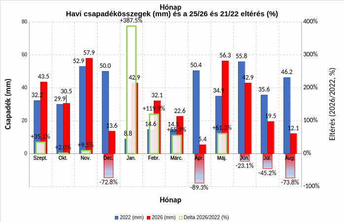
3. ábra 21/22-25/26 havi csapadékátlagainak vizsgálata (Adatforrás: HungaroMet automata 10 perces mérési adatok; grafikon: saját szerkesztés)
Jól látható, hogy a 25/26-os évjárat csapadékosabb őszi és téli viszonyokkal indult, mint a 21/22-es, ezt azonban egy abszolút értékben is nagyon száraz április követte. Ez a tavaszi vetésű kultúrák zömét éppen a vetés és a kelés időszakában érintette. Májusban a mintapontok átlagában 56,3 mm csapadék érkezett, 61,3%-kal több, mint 2022-ben. A májusi többletet újabb száraz időszak követte: a nyári hónapok csapadékösszegei rendre alulmaradtak a ’22-es értékekhez képest, ráadásul hónapról-hónapra egyre nagyobb mértékben tért el a csapadékösszeg a ’22-estől, negatív irányba. A zöldtömeg, a virágzatok, a termések romló vízellátás, romló feltételek mellett volt kénytelen fejlődni.
Ha ezeket az adatokat összehasonlítjuk a 1991-2020 közötti éves csapadékösszegekkel, amit ma a meteorológia tudománya normál értéknek tekint, akkor tudjuk kontextusban megítélni mit is jelent egyik, vagy másik vizsgált évjárat csapadékösszege.
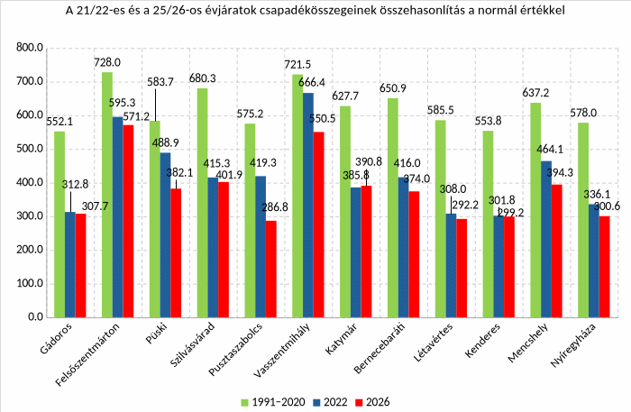
4. ábra A vizsgált évek összehasonlítása az 1991-2020 közötti csapadékviszonyokkal, a 12 mintaponton vizsgálva (Adatforrás: HungaroMet automata 10 perces mérési adatok, grafikon: saját szerkesztés)
A sokéves normálhoz viszonyítva mindkét vizsgált mezőgazdasági év jelentős csapadékhiányt mutatott. A 12 mintapont átlagában a 2021/22-es időszak csapadékösszege 31,6%-kal, a 2025/26-osé 39,1%-kal maradt el az 1991–2020-as normáltól. Az éves összeg azonban önmagában nem elegendő a növények vízellátottságának megítéléséhez. A kukorica esetében például a vízigény a fejlődési szakaszok szerint változik, és a kritikus időszakokban jelentkező hiány akkor is súlyos következményekkel járhat, ha az éves csapadékösszeg önmagában nem tűnik rendkívül alacsonynak. Ezért a következőkben a csapadék időbeli eloszlását a standardizált növényi vízigénnyel, majd a mért talajnedvességi állapottal vetem össze.
A kumulált csapadékgrafikon is jól szemlélteti a csapadék szűkösségét a vizsgált években, a normál értékekhez viszonyítva. Amikor még hozzávesszük a napi maximum hőmérsékletek vizsgálatát is, tovább élesedik a kép. Nem csak a csapadék válik szűkösebbé, hanem a hőmérséklet is markánsan emelkedik. Ha csak ’22 és ’26 összehasonlítását nézzük, akkor is kirajzolódik egy forróbb nyári időszak 2026-ban, amikor pedig 1991-2020 közötti napi maximumokat is ábrázoljuk, drámai a változás. A csapadékszegény időjárás hőséggel párosul. A várt hozamok elmaradnak, a növényeink fejlődése hiányos, kényszerérnek, vagy még termést sem képesek hozni. A betakarítás után is találunk a szárazság okozta nehézségeket. Az őszi talajművelési, vetési munkálatok során szembesülünk a száraz állapotban nehezen, vagy nem kielégítően művelhető talajokon tapasztalt negatív jelenségekkel. Még egy homoktalajnál is hoz magával negatívumokat a száraz évjárat, gondoljunk csak a szélerózióra. A kötöttebb talajok művelhetetlenekké válnak, nem tudunk magágyat készíteni jó minőségben, főként a repce alá, de a kalászosok is jobbat érdemelnének annál, amit a talaj lehetővé tesz. A kijuttatott műtrágyák víz hiányában nem oldódnak, az elvetett magok hetekig fekszenek a porban. Csúszik a kelés, rövidül a tenyészidő, csökken a hozam. Ördögi körbe léptünk az évről-évre ismétlődő aszállyal.
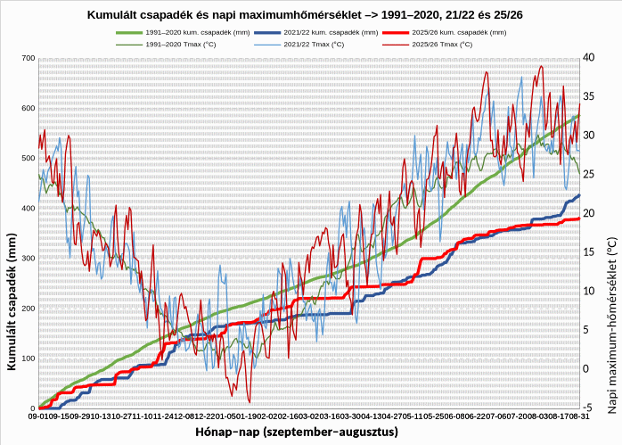
5. ábra A kumulált csapadékösszegek és a napi maximum hőmérsékletek összehasonlítása a vizsgált évjáratokban (Adatforrás: HungaroMet automata 10 perces mérési adatok, grafikon: saját szerkesztés)
A szárazság, mint meteorológiai jelenség, illetve a tapasztalható hatásainak agronómiai értékeléséhez megvizsgáltam az egyes kultúrák becsült evapotranszspirációs vízigényét (ETc). Ahogy korábban is említettem, az ETc azt mutatja meg, hogy egy adott kultúra standard, megfelelően vízellátott állománya az adott meteorológiai körülmények és fejlődési állapot mellett mennyi vizet párologtatna el a talaj és a növényzet együttes párolgása révén. Ez a vízigény a növény vízstressz nélküli fejlődésének egyik feltételét jellemzi, de önmagában nem határozza meg az elérhető termés mennyiségét, azt számos egyéb tényező is befolyásolja, mint például a növényegészségügyi állapot, a hőmérséklet vagy a tápanyagellátottság…stb. Az eredményeket grafikonon ábrázolva látható, hogy függetlenül attól, hogy a vizsgált kultúra őszi, vagy tavaszi vetésű, mindkét esetben jelentős az elméleti, becsült vízhiányos állapot hossza, és mélysége.
A kukoricánál a virágzás idejére már jelentős kumulált deficit alakult ki, amely a megtermékenyülést követő korai szemfejlődés alatt tovább nőtt. A meteorológiai ellátási rés tehát éppen a termésképzés meghatározó szakaszában mélyült el. Agronómiai szempontból ez különösen kedvezőtlen helyzet: ilyenkor a talajban tárolt víz szerepe felértékelődik. A 2026-os csapadékgörbe szinte teljes hosszában a 2022-es alatt futott. A kukorica becsült vízigényét a tenyészidőszak jelentős részében egyik évben sem fedezte az addig lehullott csapadék.
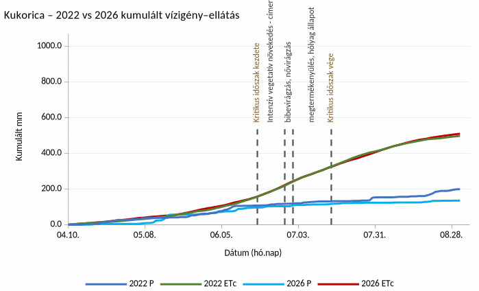
6. ábra A kukorica vízigényének és ellátásának alakulása a vizsgált években, a 12 mintapont átlagában(Adatforrás: HungaroMet automata 10 perces mérési adatok, grafikon: saját szerkesztés); (P=csapadék; ETc=a kultúra és a környezet evapotranszspirációs igénye)
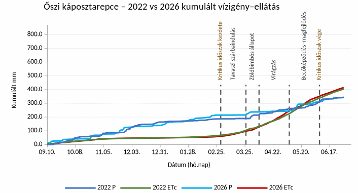
7. ábra Az őszi káposztarepce vízigényének és ellátásának alakulása a vizsgált években, a 12 mintapont átlagában; (Adatforrás: HungaroMet automata 10 perces mérési adatok, grafikon: saját szerkesztés); (P=csapadék; ETc=a kultúra és a környezet evapotranszspirációs igénye)
A repcénél már mást mutatnak a számok. A vizsgált tenyészidőszak nagyobb részében mindkét évjáratban meghaladta a kumulált csapadék az elméleti ETc-igényt. A különbség még a kritikus időszak elején is pozitív maradt, egészen a virágzás végéig. A becőképződés és a magok fejlődésének idejére viszont már kumulált csapadék–ETc deficit alakult ki. A hiány időzítése itt is kedvezőtlen: az ebben a szakaszban fellépő tényleges vízhiány a magméretet és a teljes értékű magok számát egyaránt csökkentheti. Ez a repcetermesztés egyik lényeges aszálykockázata.
Az ősszel vetett kalászosoknál a tenyészidőszak nagyobb részében a kumulált csapadék meghaladta a becsült ETc-t. A meteorológiai ellátási rés még kalászhányás előtt megjelent, így a virágzás és a termésképzés már a felhalmozódó deficit időszakára esett. Ebben a szakaszban a csapadék mellett a talaj tárolt vízkészlete adhatna fedezetet a növények vízigényére.
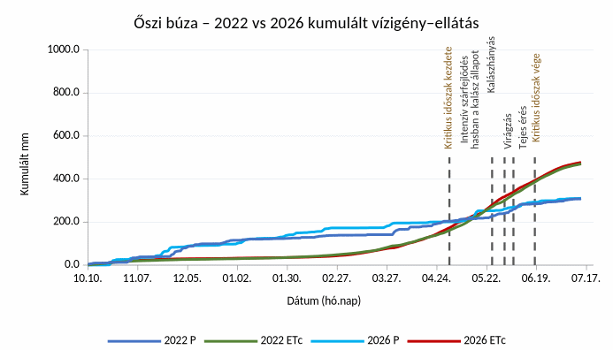
8. ábra Az őszi búza vízigényének és ellátásának alakulása a vizsgált években, a 12 mintapont átlagában; (Adatforrás: HungaroMet automata 10 perces mérési adatok, grafikon: saját szerkesztés); (P=csapadék; ETc=a kultúra és a környezet evapotranszspirációs igénye)
A tavaszi kalászosok vizsgálata, más következtetést enged meg.
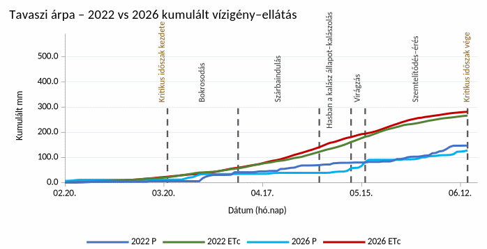
9. ábra A tavaszi árpa vízigényének és ellátásának alakulása a vizsgált években, a 12 mintapont átlagában; (Adatforrás: HungaroMet automata 10 perces mérési adatok, grafikon: saját szerkesztés); (P=csapadék; ETc=a kultúra és a környezet evapotranszspirációs igénye)
A kelés időszakában a kumulált csapadék még megközelítette a becsült vízigényt, a bokrosodás és a kalászdifferenciálódás idejére azonban már deficit alakult ki. A tavaszi árpánál tehát már a terméspotenciál korai kialakulását csapadékból nem fedezett vízigény kísérte.
A talajnedvesség adatai a mélyebb rétegekben is száraz állapotot mutatnak. Az OVF 2026. augusztus végi adatai szerint Gádoroson 75 cm mélységben 12,6% (V/V) volt a talaj nedvessége, és a vizsgálatkor legnedvesebb, 20 cm-es mélységben is csak 17,7% (V/V). A pontra becsült talajhidraulikai értékekhez viszonyítva a 75 cm-es mérés mintegy 3 térfogatszázalékponttal a hervadáspont alatt, a 20 cm-es mintegy 3 térfogatszázalékponttal fölötte helyezkedett el. Utóbbi egy liter talajban körülbelül 0,03 liter vizet jelent a becsült hervadásponti víztartalom fölött. A két mélység adatai szűkös vízkészletet jeleznek. Az összehasonlítás időablakán túli, szeptember 10-i kiegészítő megfigyelés mindkét mélységben további mintegy 0,5 térfogatszázalékponttal csökkent értéket mutatott.
Annak érdekében, hogy az eltérő talajtípusokon és termőhelyeken mért nedvességet összehasonlíthatóbb formában tudjam szemléltetni, minden mintapontra, a napi adatok és a talajhidrológiai mutatók felhasználásával kiszámoltam a REW értékét.
A REW (Relative Extractable Water) a relatív kivonható vízmennyiséget fejezi ki a vizsgált talajmélységben. Megmutatja, hol helyezkedik el a mért víztartalom a becsült hervadáspont és a szabadföldi vízkapacitás között. A 0,5-ös érték a hasznosítható vízkapacitás 50%-ának felel meg. A két határ között a REW 0 és 1 közé esik; a negatív érték hervadáspont alatti, az egynél nagyobb érték szabadföldi vízkapacitás fölötti víztartalmat jelez a becsült határértékekhez képest. Minél kisebb a REW, annál szárazabb az adott talajréteg.
A REW értékét az alábbi képlettel kapjuk meg:
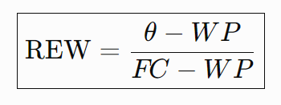
ahol: |
|
θ (théta) |
Aktuálisan mért térfogati talajnedvesség, V/V% |
WP |
Hervadásponti víztartalom, V/V% |
FC |
Szabadföldi vízkapacitás, V/V% |
FC − WP |
Hasznosítható vízkapacitás |
A számításhoz szükséges adatokat a Víztudományi és Vízbiztonsági Nemzeti Laboratórium https://husoilhydrogrids.hu és az Országos Vízügyi Főigazgatóság https://aszalymonitoring.vizugy.hu oldalai, és az ott nyilvánosan elérhető adatai szolgáltatták. Az OVF adatait koordináták szerint összevezettem a VVNL 100*100 m-es raszterben fellelhető adataival, és egy mélységi interpolációval kiegészítve átlagoltam.
20 cm-es mélységben a REW az alábbiak szerint alakult a 12 mintapont átlagában, a vizsgált időszakokban:
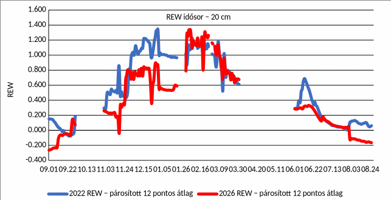
10. ábra a REW értéke a vizsgált időszakokban, a 12 mintapont átlagában
Az évszakos és az évjáratos különbségek szépen kirajzolódnak. Az áprilisi adatok adathiány miatt kimaradtak az ábrából. Nyár végén, az őszi vetésekhez közeledve a 20 cm-es mélységben alacsony REW-értékeket találunk. Ősszel mindkét évjáratban emelkedett a mutató, majd a nyugalmi szakasz magasabb értékei után tavasszal ismét csökkent. A talajnedvesség ciklikus változását a csapadék, a növényzet párologtatása, a talaj párolgása és a talajon belüli vízmozgás együttesen alakította.
Ezt az adatsort is összevetettem egy másik, hasonló adatsorral. Ez pedig az OVF által alkalmazott és napi rendszerességgel naplózott Aszályindex (HDIs). A HDIs fogalmi meghatározásához először a HDI0 fogalmát kell tisztáznunk. „A HDI0 egy napi időlépésű, csapadék és léghőmérséklet adatokon alapuló aszályindex, melyet az ATIVIZIG és az SZTE munkatársai fejlesztettek ki 2016-ban. A HDI0 funkciójában az eddigi, széles körben elterjedt aszályindexekhez (pl. PAI, PaDI, SPI, PDSI) hasonlít. Meghatározásában csak a meteorológiai paraméterek játszanak szerepet, és térbeli különbségei kizárólag a csapadék és a hőmérséklet térbeli változatosságának köszönhetők” a HDI0-ből származtatható a HDIS. „A HDIS index a HDI0 számítási formulájának bővített változata, mely a párolgási hiányt is figyelembe veszi. A HDIS változatra azért volt szükség, mert Magyarország klímája kellően arid ahhoz, hogy a nyári időszakban átlagos időjárás esetén is jelentős szárazság alakuljon ki, ezért a HDI0 index értékei a nyári hőség időszakok során átlagoshoz közeli állapotot jelezhetnek, annak ellenére, hogy a hőség miatt felmerülhet igény vízgazdálkodási beavatkozásokra.
A HDIS kiszámításának alapparaméterei a HDI0-val megegyeznek, azonban ebben a változatban azt feltételezzük, hogy hőség idején a potenciális evapotranspiráció (PET) nem függ a rendelkezésre álló víz mennyiségétől, és a veszteség teljes mértékben realizálódik. A megvalósulni nem tudó párolgási hiányt a vízmérleg számításban negatív elemként vesszük figyelembe. A gyakorlatban ez azt jelenti, hogy a vízmérleg kiszámításakor a tényleges párolgás helyett a PET értékével csökkentjük a víztartalmat (WS0 = WS-1+P-PET). Ezáltal a HDIS aszályindex értéke az alapindexénél magasabb lesz olyan esetekben, amikor az időjárási körülmények miatt jelentős párolgás alakulna ki, azonban a rendelkezésre álló víztartalék ezt nem teszi lehetővé.”
A HDIS értékei az alábbi táblázat szerint értelmezhetőek:
Védekezési fokozat |
Minősítés |
Kritérium |
Rendelkezésre álló víztartalom* |
(0.) nincs fokozat |
nincs vízhiány |
HDIS < 1,2 |
> 83% |
1. fok |
enyhe vízhiány |
1,2 ≤ HDIS < 1,5 |
66-83% |
2. fok |
közepes vízhiány |
1,5 ≤ HDIS < 2,0 |
50-66% |
3. fok |
erős vízhiány |
2,0 ≤ HDIS < 3,0 |
33-50% |
4. fok |
rendkívüli vízhiány (aszály) |
3,0 ≤ HDIS |
< 33% |
* A víztartalom értéke a HDIs esetében a potenciális párolgás napi mértékével csökkentve van. A nem realizálódó PET a hőstressz hatását fejezi ki. Adatforrás: OVF; https://aszalymonitoring.vizugy.hu/img/osszefoglalo_hdis_2025.pdf
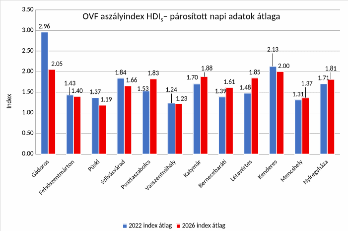
11. ábra Az OVF Aszályindex HDIS átlagának alakulása a vizsgált évjáratokban, a 12 mintaponton
Az aszályindex térben megosztott képet ad: a mintapontok egyik felén a ’22-es, a másik felén a ’26-os érték volt magasabb. Az ábrán a két évjárat azonos hónap–napjain rendelkezésre álló, párosított napi adatok átlaga szerepel. Gádoros és Felsőszentmárton 2022-es adathiánya mindkét évből szűkebb időszak összevetését engedi meg. A teljes időszaki átlag mellett az évszakos különbségek is lényegesek: a ’26-os tél a 12 mintapont átlagában 20,7%-kal csapadékosabb volt, miközben a nyári csapadékösszegek elmaradtak a ’22-es értékektől.
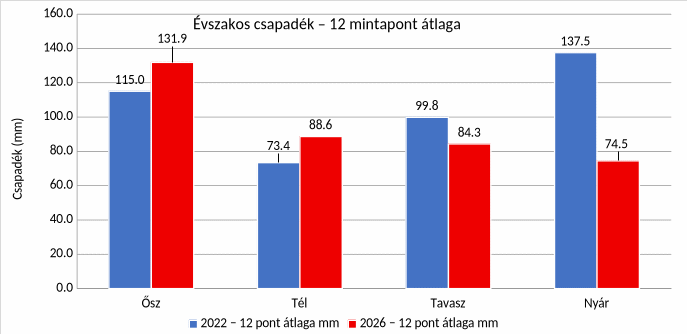
12. ábra Évszakos csapadékmennyiségek átlaga a 12 mintaponton 22/26; (Adatforrás: HungaroMet automata 10 perces mérési adatok, grafikon: saját szerkesztés)
A hőmérsékleti adatok tekintetében az évjáratok közötti különbség iránya az év során többször változik. A növénytermesztés számára különösen fontos, hogyan alakultak a szélsőségek.
Megdöbbentő a 2026-os hőségnapok és a forrónapok számának változása:
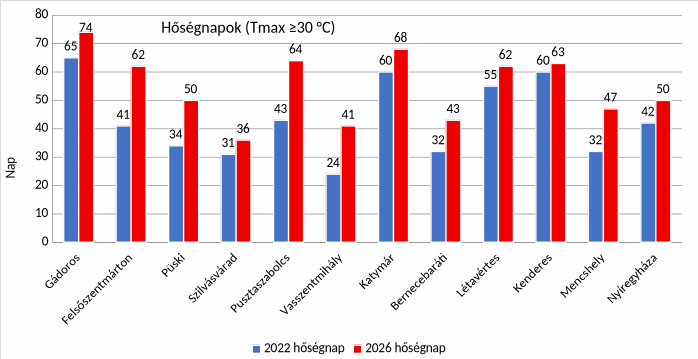
13. ábra Hőségnapok száma a 12 mintaponton 22/26 (Adatforrás: HungaroMet automata 10 perces mérési adatok, grafikon: saját szerkesztés)
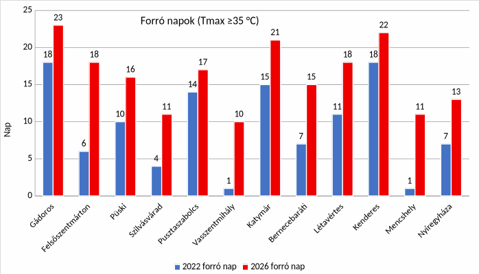
14. ábra Forrónapok száma a 12 mintaponton 22/26 (Adatforrás: HungaroMet automata 10 perces mérési adatok, grafikon: saját szerkesztés)
Mindkét mutató esetében, az összes mintaponton emelkedtek a számok. Külön figyelmet érdemel a forrónapok összehasonlításánál Vasszentmihály és Mencshely esete. Vasszentmihályon tízszer annyi forró nap volt ’26-ban, mint ’22-ben, Mencshelyen ugyanez a szám tizenegyszeres növekményt mutatott. Emellett több mintaponton is megduplázódott, megháromszorozódott a forrónapok száma.
A hőség terhelését az egymást követő forró időszakok hossza és az alattuk érkező csapadék együtt alakítja. A hosszan fennálló, csapadékszegény hőség fokozza a növényállományok vízellátási kockázatát. A két év összevetése ebben is jelentős különbséget mutat.
A mintapontonként azonosított hőségperiódusok közül 2022-ben a két leghosszabb, legalább 30 °C-os napi maximumhőmérsékletű, 3 napot meghaladó hosszúságú szakasz egyaránt 13 napig tartott; alattuk 14,68, illetve 1,17 mm csapadék hullott. ’26-ban a két leghosszabb periódus már egyaránt 23 napos volt, mindössze 4,53, illetve 0,45 mm csapadékkal. A leghosszabb hőségperiódus tehát tíz nappal megnyúlt. A több mint három hétig kitartó hőséghez alig társult csapadék: ez szinte elviselhetetlen meteorológiai terhelést jelentett.
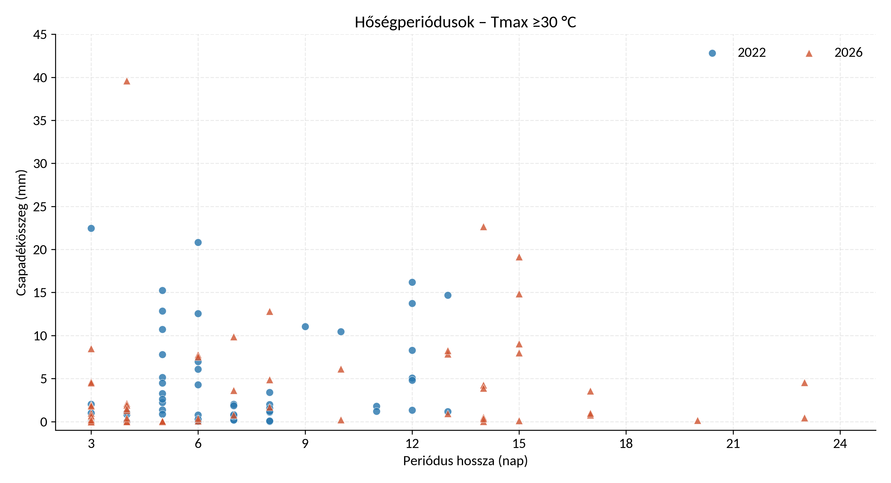
A terméseredményeket a KSH 2022-es végleges adatsora és a VSZT 2026-os időközi betakarítási jelentése alapján vetettem össze. A 12 mintaponthoz megyei termésátlagokat rendeltem, majd ezek egyszerű átlagát számítottam ki. Az ábrák ezt az összehasonlítást mutatják.
Kultúra |
2022 átlag kg/ha |
2026 átlag kg/ha |
Változás kg/ha |
Változás % |
2026 átlag betakarítottság % |
Őszi búza / búza |
4400 |
4307 |
-93 |
-2,1% |
88,2 |
Őszi árpa |
4722 |
4547 |
-175 |
-3,7% |
99,1 |
Tavaszi árpa |
3832 |
3706 |
-125 |
-3,3% |
88,0 |
Őszi káposztarepce |
2328 |
2558 |
230 |
9,9% |
94,5 |
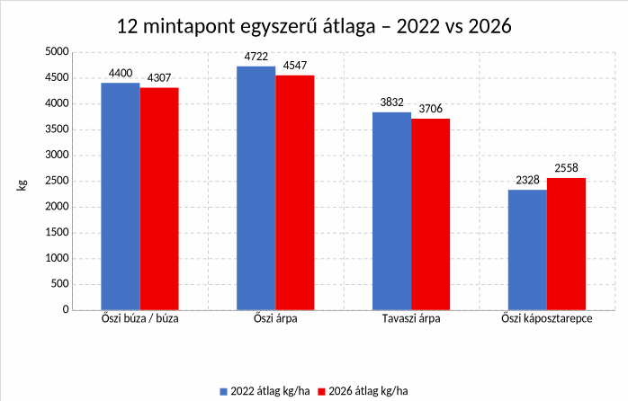
15. ábra A 12 mintaponthoz rendelt megyei termésátlagok egyszerű átlaga
A vizsgált kalászos kultúrák mindegyikénél alacsonyabb a 2026-os időközi hozamátlag a 2022-es eredménynél. A különbség nem drámai: az őszi árpa átlaga 3,7%-kal, az őszi búzáé 2,1%-kal maradt el a négy évvel korábbitól.
Kakukktojás a repce: a vizsgált nyári betakarítású növények közül egyedüliként múlta felül a 2022-es átlagát. A vetésterülete a KSH adatai szerint az utóbbi 25 évben jelentősen változott, csökkenő és növekvő szakaszok követték egymást. A 2020 óta tartó csökkenés ’26-ra növekedésbe fordult. Szakmai megítélésem szerint a jobb hozam értelmezésében a termőhelyi szelekció is lényeges szempont: ha a kultúra a kedvezőbb adottságú területeken marad termesztésben, az már önmagában is emelheti az átlagtermést. A repce országos vetésterülete 2018-ban volt a legmagasabb értéken; 330 ezer hektár fölött találtunk akkor repce táblákat. 2025-ben már csak 143 ezer hektárt vetett az ország, míg 2026-ban 8%-os emelkedéssel 154 ezer hektár repce volt határainkon belül. a ’18-tól tartó csökkenés ideje alatt ment végbe a termőhelyi szelekció. A ’26-os növekmény valószínűleg a gazdák, a gazdaságok útkeresésével magyarázható. Mivel a repce az utóbbi években stabil piacot talál magának, ami ráadásul jó árakkal is párosul, érhető, hogy az egyre csúfosabb kudarcokat felmutató kukorica kieső területeinek egy részére repce kerül, az arra alkalmas táblákon. A repce eredményét ezért a vetésterület és a termesztési feltételek változásával együtt értékelem.
Összegezve a korábban ismertetett eredményeket:
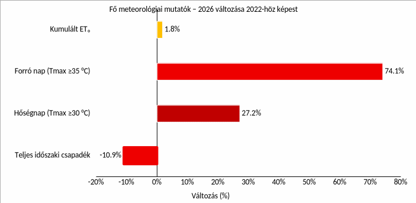
16. ábra A főbb meteorológiai mutatók változása a 12 mintapont átlagában; (Adatforrás: HungaroMet automata 10 perces mérési adatok, grafikon: saját szerkesztés)
A 12 mintapont átlagában mind a négy kiemelt meteorológiai mutató kedvezőtlenebbül alakult 2026-ban. A teljes időszaki csapadék 10,9%-kal csökkent, a hőségnapok száma 27,2%-kal, a forró napoké 74,1%-kal emelkedett, a kumulált ET₀ pedig 1,8%-kal nőtt. Kevesebb csapadékhoz nagyobb párologtató igény és gyakoribb hőség társult.
A meteorológiai változások a növényeinkre nehezedő nyomást fokozva rontják a termelési feltételeket és a hatékonyságot. A maximális kumulált deficit azt mutatja meg, hogy a vizsgált időszak során a növényállomány addig felhalmozódó becsült vízigénye (ETc) legfeljebb hány milliméterrel haladta meg az ugyanaddig lehullott csapadék összegét. A két évet összehasonlítva az alábbi változásokat tudtam kimutatni.
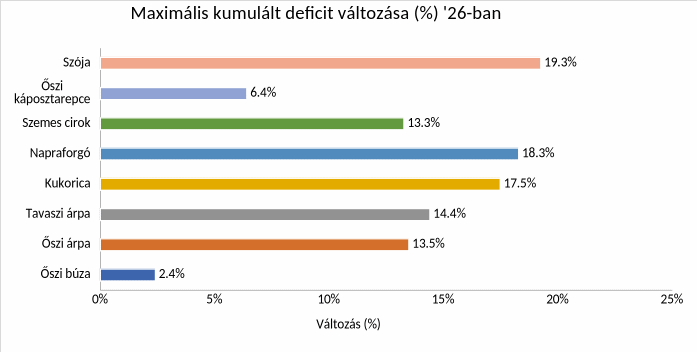
17. ábra Az maximális ETc deficit összehasonlítása kultúránkként, a 12 mintapont átlagában; (Adatforrás: HungaroMet automata 10 perces mérési adatok, grafikon: saját szerkesztés)
Minden vizsgált kultúránál nőtt a maximális kumulált deficit. Az őszi búzánál és a repcénél ez még enyhén növekvő tenyészidőszaki csapadék mellett is bekövetkezett: előbbinél 307,67-ről 310,85 mm-re, utóbbinál 344,26-ról 346,44 mm-re nőtt a csapadékösszeg, miközben a becsült ETc is emelkedett. A csapadék időzítése és a vízigény alakulása tehát éppúgy meghatározó, mint a lehullott víz teljes mennyisége.
A deficitterület a napi kumulált deficitértékek időbeli összege, vagyis a deficitgörbe alatti terület. Nagyobb értéke nagyobb hiányból, hosszabb fennállásból vagy ezek együtteséből adódhat. Az ábrából kiderül, hogy a romló meteorológia viszonyok hosszabban álltak fenn ’26-ban, ezzel is nehezítve a termelést, rontva a terméskilátásokat.
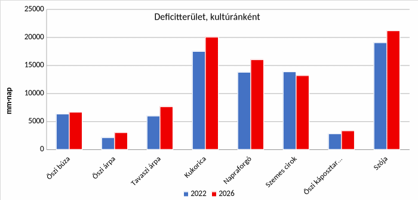
18. ábra Az ETc deficitterület változása kultúránkként, a 12 mintapont átlagában; (Adatforrás: HungaroMet automata 10 perces mérési adatok saját számítások, saját szerkesztés)
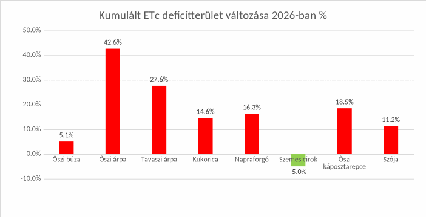
19. ábra A kumulált ETc deficitterület változása 2026-ban kultúránkként, a 12 mintapont átlagában; (Adatforrás: HungaroMet automata 10 perces mérési adatok, grafikon: saját számítások, saját szerkesztés)
A fenti két grafikon egyértelműnek tűnő választ ad a két évjárat összehasonlításában. ’26-ban jelentősen romlottak a vizsgált paraméterek által meghatározott körülmények, szinte minden kultúra esetében. A szemes cirok az egyedüli növényünk, amely paramétereiben 5%-os javulást mutat, ennek hatását a betakarítása végén lehet majd lemérni. A legnagyobb deficitterületet az ősziárpában láthatunk, ami azt jelenti, hogy ennek a kultúrának kellett a leghosszabb időt, a legrosszabb elméleti vízellátás mellett sínylődni.
Az előzetes, de már idei betakarításból származó hozamadatok mindezt részben alá is támasztják. A repcét továbbra is külön kezelném, a korábban említett termőhelyi szelekciós folyamatok miatt, de a többi, ismert hozammal rendelkező kultúránál jól ábrázolódik, hogy a magasabb deficitterület romló hozamadatokban jelentkezik a szántóföldön. Az őszi árpa deficitterületének 42,6%-os növekedése mellett a hozzárendelt megyei hozamátlag 3,7%-kal csökkent, míg a búzánál az 5,1% deficitterület emelkedés „csak” 2,1%-os hozamcsökkenéshez vezetett. A kukoricánál kimutatott 14,6%-os deficitterület növekedés nem tűnik soknak az őszi árpa adata mellet, de ezt a számot akkor értékeljük helyesen, ha figyelembe vesszük, hogy 2022-ben az alföldi, öntözetlen kukoricatáblák sok esetben még a fajtára jellemző méretet sem tudták elérni, a termésképzésről nem is beszélve. Az ehhez képest további 14,6%-ot növekvő deficitterület, azaz tovább romló feltételek mellett szinte képtelenség volt ebben az évben öntözés nélkül kukoricát termelni.
Ne feledjük, hogy a hozamadatok egy-egy megye részleges adataiból származó adatok, így egy-egy megyét reprezentálnak, ebből számítottam az összesített eredményt, a deficitterületek változásai, pedig egy-egy mérési pontról adnak tájékoztatást. Ha egy megye több mintaponthoz tartozik, az egyszerű átlagban többször szerepel. Ezért lehet az, hogy a deficitterületek növekedése és a hozamok csökkenése nem arányos, a két érték nem párhuzamosan halad.
A hozamok összevetésénél a 2022-es, egy már önmagában is rendkívül száraz év adja a viszonyítási alapot. Ehhez képest a 2026-os időközi adatokban a kalászosok átlagai tovább csökkentek, a repcéé emelkedett. A meteorológiai mérleg egyértelmű: a 12 mintapont átlagában 2026-ban kevesebb csapadék, nagyobb párologtató igény és gyakoribb hőség jelentkezett, miközben minden vizsgált kultúránál nőtt a maximális kumulált deficit. E mutatók alapján a vizsgált termőhelyek növénytermesztése számára 2026 jelentette a nagyobb meteorológiai terhelést.
A hozamváltozásokat az alábbi ábra alapján tudjuk összegezni:
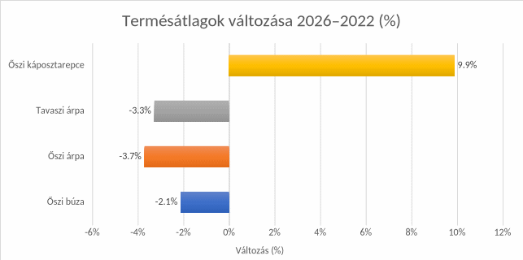
20. ábra A nyári betakarítású kultúrák hozamváltozása 2026-ban; (Adatforrás: KSH stat-adat táblák)
A meteorológiai és az agronómiai körülményeken túl a 2026-os év további nehézségeket is hozott. Bármely évet is vizsgáljuk ’22 vagy ’26 közül, mindkettőre igaz, hogy nehezen előállított, csökkent hatékonysággal megtermelt terményeket kellett és kell értékesíteni az aszályos évjárat után. Így könnyű belátni, hogy mennyire fontos a piac működése ilyen helyzetben. Nem mindegy, hogy az átlagoshoz képest fél, vagy negyed terméseket milyen áron tudja a termelő értékesíteni.
Termény |
2022. július (Ft/t) |
2026. július (Ft/t) |
változás (Ft/t) |
változás (%) |
Búza |
132 900 |
65 400 |
−67 500 |
−50,8 |
Árpa |
108 400 |
56 700 |
−51 700 |
−47,7 |
Repcemag |
285 000 |
189 400 |
−95 600 |
−33,5 |
Forrás: KSH STADAT 1.2.1.16. – A fontosabb növénytermesztési termékek felvásárlási átlagára, havonta. A KSH Ft/kg adataiból Ft/t-ra átszámítva; saját számítás.
A KSH adatai szerint 2026 júliusában a búza felvásárlási átlagára 50,8%-kal, az árpáé 47,7%-kal, a repcéé 33,5%-kal maradt el a 2022. júliusi árszinttől. A búza és az árpa tehát közel feleannyit ért, mint négy évvel korábban. A bemutatott kalászoshozamok mérsékelt csökkenéséhez így lényegesen alacsonyabb értékesítési árak társultak.
Természetesen az sem mellékes, hogy az adott évben mekkora költséggel lehet előállítani ezeket a termékeket. Ebből a szempontból változatosabb a kép.
Üzemanyag |
2022. július (Ft/l) |
2026. július (Ft/l) |
változás (Ft/l) |
változás (%) |
Gázolaj |
480 |
605 |
125 |
26,00% |
Forrás:
KSH STADAT 1.2.1.8. – Egyes termékek és szolgáltatások
fogyasztói átlagára, havonta. A változás saját számítás, a
százalékos változás bázisa 2022 júliusa.
A gázolaj
fogyasztói átlagára piaci referenciaadat; a mezőgazdasági üzemek
tényleges beszerzési árától és elszámolt költségétől
eltérhet. A 2022. júliusi érték az árstop időszakára
vonatkozik.
Megnevezés |
2022. II. né. (Ft/t) |
2026. II. né. (Ft/t) |
Δ (Ft/t) |
Δ (%) |
Mész-ammon-salétrom, 27% |
248 670 |
130 725 |
−117 945 |
−47,4 |
Forrás: KSH STADAT 1.2.1.14. – A mezőgazdasági ráfordítások átlagárai, negyedévente; saját számítás. Megjegyzés: változás = 2026. évi ár − 2022. évi ár; változás (%) = (2026. évi ár / 2022. évi ár − 1) × 100. Az összehasonlítás nominális árakon, inflációs korrekció nélkül készült.
A költségoldalon ugyanakkor enyhülés is látható. A 27%-os mész-ammon-salétrom tonnánkénti átlagára 2022 második negyedévében 248 670, 2026 azonos időszakában 130 725 forint volt, ami 47,4%-os csökkenés. Azonos kijuttatott mennyiség mellett ez érdemben mérsékelhette a műtrágya költségét.
Mutató |
2022. I. félév |
2026. I. félév |
változás |
változás |
Havi bruttó átlagkereset (Ft/fő/hó) |
356 076 |
563 457 |
207 381 |
58,20% |
Forrás: KSH STADAT 20.2.1.46. Bruttó átlagkereset a mezőgazdaság, erdőgazdálkodás és halászat ágban. A különbség és a százalékos változás saját számítás.
A munkabérek alakulása tovább árnyalja a gazdálkodás feltételeit: a mezőgazdaság, erdőgazdálkodás és halászat területén a havi bruttó átlagkereset 2022 és 2026 első féléve között 58,2%-kal emelkedett. A magasabb bérszínvonal mellett a terméskiesés az egy tonnára jutó bérköltséget is növeli, hiszen a munkaráfordítás nem csökken a hozammal arányosan.
Összegezve a bevételek és költségek gyorsvizsgálatát: költségcsökkenést a műtrágya árak vonatkozásában tudtam igazolni, mintegy 47%-os mértékben. Növekedtek a költségek az üzemanyagok, a munkabérek tekintetében.
Bevételi oldalon is csökkenés tapasztalható, ami a korábbiak ismeretében lényegesen nagyobb terhet jelent az átvételi árak csökkenésénél.
Szükséges még megemlíteni, hogy az állattenyésztési ágazatok sem a legjobb időszakot élik. Gondoljunk csak a tejpiaci helyzetre, ami év eleje óta sújtja a tejelő gazdaságokat, vagy a sertésárakról szóló, nem éppen biztató hírekre. Ha az állattenyésztési ágazatok értékesítési árait is megvizsgáljuk, az alábbi kép rajzolódik ki.
Termék |
Nominális árváltozás |
Inflációval korrigált árváltozás |
Vágóbaromfi összesen |
−1,2% |
−23,6% |
Vágócsirke |
−4,9% |
−26,4% |
Vágópulyka |
12,40% |
−13,0% |
Vágókacsa |
0,50% |
−22,2% |
Étkezési tyúktojás |
27,60% |
−1,3% |
Tehéntej |
−24,6% |
−41,6% |
Vágósertés |
−32,4% |
−47,7% |
2026. július változása 2022.
júliushoz képest. Saját számítás a KSH felvásárlási
átlagáraiból, az általános
fogyasztóiár-indexszel
korrigálva. Képlet: (2026-os ár / 2022-es ár / 1,29218 − 1) ×
100.
Az állattenyésztési ágazatok helyzetét tovább árnyalja, ha a felvásárlási árakat az infláció figyelembevételével hasonlítjuk össze. A KSH fogyasztóiár-indexei alapján 2022 júliusa és 2026 júliusa között az általános árszínvonal mintegy 29,2%-kal emelkedett. Ezzel korrigálva valamennyi vizsgált állati termék felvásárlási ára veszített a reálértékéből. A csökkenés a vágóbaromfi egészében 23,6%, ezen belül a csirkénél 26,4%, a pulykánál 13,0%, a kacsánál 22,2% volt. A tojás ára közel megőrizte vásárlóerejét, reálértéke mindössze 1,3%-kal mérséklődött. A legnagyobb visszaesés a tej és a sertés esetében mutatkozott: előbbinél 41,6%-kal, utóbbinál 47,7%-kal csökkent a felvásárlási ár reálértéke. A számítás a KSH felvásárlási átlagárainak és fogyasztóiár-indexeinek összevetésén alapul.
A pulyka 12,4%-os és a tojás 27,6%-os nominális áremelkedése tehát nem volt elegendő ahhoz, hogy az egységnyi termék értékesítéséből származó bevétel megőrizze vásárlóerejét. A csirke ára eközben nominálisan is 4,9%-kal csökkent, a kacsáé mindössze 0,5%-kal emelkedett, a vágóbaromfi összesített átlagára pedig 1,2%-kal maradt el a 2022. júliusitól. A tej 24,6%-os és a sertés 32,4%-os nominális áresésének hatását az infláció tovább mélyítette.
Minden vizsgált ágazatban tetten érhető a felvásárlási árak reálértékének csökkenése. Ez különösen nehéz helyzetbe hozza azokat a több lábon álló gazdaságokat, amelyek növénytermesztéssel és állattenyésztéssel egyaránt foglalkoznak. Ezek az üzemek ugyanis úgy alakították ki termelési és költségszerkezetüket, hogy az egyik ágazat válságát a többi kedvező eredménye ellensúlyozhassa. A 2026-os adatok alapján erre kevés esély mutatkozik, hiszen a bemutatott ár-folyamatok 2026-ban ezt az ellensúlyozó szerepet is nehezítik.
Összegzés
A címben feltett kérdésre a vizsgált adatok alapján azt a választ adom, hogy a 12 mintapont átlagában 2026 jelentette a nagyobb meteorológiai terhelést a növénytermesztés számára. A 2022-es, már önmagában is rendkívül száraz évjárathoz képest 10,9%-kal kevesebb csapadék hullott, miközben a légkör párologtató igénye 1,8%-kal emelkedett. A hőségnapok száma 27,2%-kal, a forrónapoké 74,1%-kal nőtt, a leghosszabb hőségperiódus pedig 13 napról 23 napra nyúlt. A kevesebb vízhez tehát gyakoribb és hosszabban fennálló hőség társult.
A két évjárat különbségét ugyanakkor nem lehet minden termőhelyre és minden kultúrára egyetlen számmal leírni. Az OVF aszályindexe a mintapontok felén 2022-ben, másik felén 2026-ban volt magasabb. A csapadék időzítése, a talajban tárolt víz és a növények fejlődési állapota együtt határozta meg, hogy a szárazság mikor és milyen terhelést jelentett. Minden vizsgált kultúránál nőtt a maximális kumulált csapadék–ETc deficit, a deficitterület változása azonban már eltéréseket mutatott: a szemes ciroknál mérséklődött, a többi kultúránál emelkedett. Ez is megmutatja, miért szükséges a csapadékösszegeken túl a vízhiány időzítését és tartósságát is vizsgálni.
Az időközi terméseredményekben a kalászosok hozamának mérsékelt csökkenése, a repcénél javulás látható. A gazdálkodás eredményét azonban az határozza meg, hogy a megtermelt mennyiséget milyen költséggel állítottuk elő, és milyen áron tudjuk értékesíteni. A búza és az árpa 2026. júliusi felvásárlási ára közel a felére esett a négy évvel korábbihoz képest, és a repcéé is jelentősen csökkent. A vizsgált műtrágya árának csökkenése mellett a bérszínvonal számottevően emelkedett. Az állattenyésztés bemutatott termékeinél pedig az értékesítési árak reálértékének csökkenése nehezíti, hogy a több lábon álló gazdaságok más ágazatok eredményével ellensúlyozzák a növénytermesztés kedvezőtlen évét.
A vizsgálat legfontosabb tanulsága ezért túlmutat azon, hogy melyik évben hullott kevesebb csapadék. A bemutatott termőhelyeken 2026-ban a vízhiány és a hőség együttes terhelése nőtt, miközben a vizsgált termékek értékesítési feltételei is romlottak. A termelőknek így egyszerre kell megküzdeniük a termés biztonságának és a gazdálkodás eredményességének megőrzéséért.
Összességében kijelenthetjük, hogy a 2026-os esztendő lényegesen nehezebb meteorológiai, agronómiai, és piaci helyzetet hozott magával, minden túlzás nélkül állítható, hogy sok szempontból rosszabb év volt, mint 2022 a magyarországi gazdák számára. Megkockáztatom, hogy a modern, II. világháború utáni magyar mezőgazdaság történetében 2026-nak előkelő helye lesz a legrosszabb évek sorában.
2026.09.18
Nemes Miklós
okleveles agrármérnök, növényvédelmi szakmérnök
Irodalom- és forrásjegyzék
Aszályelemzés. A 21/22-es és a 25/26-os évjáratok összehasonlítása.
Szakirodalom
Allen, R. G.; Pereira, L. S.; Raes, D.; Smith, M. (1998): Crop evapotranspiration. Guidelines for computing crop water requirements. FAO Irrigation and Drainage Paper 56. FAO, Rome.
https://www.fao.org/4/X0490E/X0490E00.htm
Brouwer, C.; Goffeau, A.; Heibloem, M. (1985): Irrigation Water Management: Training Manual No. 1. Introduction to Irrigation. FAO. 2. fejezet: Soil and Water.
https://www.fao.org/4/r4082e/r4082e03.htm
Cao, Q.; Li, J.; Xiao, H.; Cao, Y.; Xin, Z.; Yang, B.; Liu, T.; Yuan, M. (2020): Sap flow of Amorpha fruticosa: implications of water use strategy in a semiarid system with secondary salinization. Scientific Reports, 10, 13504.
https://doi.org/10.1038/s41598-020-70511-2
Dolschak, K.; Gartner, K.; Berger, T. W. (2019): The impact of rising temperatures on water balance and phenology of European beech (Fagus sylvatica L.) stands. Modeling Earth Systems and Environment, 5, 1347-1363.
https://doi.org/10.1007/s40808-019-00602-1
Fiala, K.; Barta, K.; Benyhe, B.; Fehérváry, I.; Lábdy, J.; Sipos, Gy.; Győrffy, L. (2018): Operatív aszály- és vízhiánykezelő monitoring rendszer. Hidrológiai Közlöny, 98(3), 14-24.
https://publicatio.bibl.u-szeged.hu/17598/
Sopharat, J.; Gay, F.; Thaler, P.; Sdoodee, S.; Isarangkool Na Ayutthaya, S.; Tanavud, C.; Hammecker, C.; Do, F. C. (2015): A simple framework to analyze water constraints on seasonal transpiration in rubber tree (Hevea brasiliensis) plantations. Frontiers in Plant Science, 5, 753.
https://doi.org/10.3389/fpls.2014.00753
Szabó, B.; Mészáros, J.; Laborczi, A.; Takács, K.; Szatmári, G.; Bakacsi, Z.; Makó, A.; Pásztor, L. (2024): From EU-SoilHydroGrids to HU-SoilHydroGrids: A leap forward in soil hydraulic mapping. Science of the Total Environment, 921, 171258.
https://doi.org/10.1016/j.scitotenv.2024.171258
Meteorológiai, talaj- és aszálymonitoring-források
HungaroMet (é. n.): Automata meteorológiai állomások tízperces mérési adatai. Nyílt adatportál.
https://odp.met.hu/climate/observations_hungary/10_minutes/
HungaroMet (é. n.): KLIMADAT. Az 1991-2020-as időszak havi csapadéknormáljai. Raszteres térképszolgáltatás.
https://gis01.met.hu/server/rest/services/PROD_Klimadat/rasters/ImageServer
HU-SoilHydroGrids (é. n.): Magyarország háromdimenziós talajhidrológiai adatbázisa.
https://husoilhydrogrids.hu/
Országos Vízügyi Főigazgatóság (é. n.): Operatív Vízhiány Értékelő és Előrejelző Rendszer. Aszálymonitoring-adatbázis.
https://aszalymonitoring.vizugy.hu/
Országos Vízügyi Főigazgatóság (é. n.): HDI0 és HDIS. Összefoglaló. osszefoglalo_hdis_2025.pdf.
https://aszalymonitoring.vizugy.hu/img/osszefoglalo_hdis_2025.pdf
Országos Vízügyi Főigazgatóság (é. n.): Aszálymonitoring. Felhasználási feltételek.
https://aszalymonitoring.vizugy.hu/index.php?acc=1&view=usercond
Termésátlag- és területi adatok
Központi Statisztikai Hivatal (é. n.): 19.1.2.4. A búza termelése vármegye és régió szerint. STADAT.
https://www.ksh.hu/stadat_files/mez/hu/mez0071.html
Központi Statisztikai Hivatal (é. n.): 19.1.2.5. A kukorica termelése vármegye és régió szerint. STADAT.
https://www.ksh.hu/stadat_files/mez/hu/mez0072.html
Központi Statisztikai Hivatal (é. n.): 19.1.2.6. A árpa termelése vármegye és régió szerint. STADAT.
https://www.ksh.hu/stadat_files/mez/hu/mez0073.html
Központi Statisztikai Hivatal (é. n.): 19.1.2.11. A napraforgómag termelése vármegye és régió szerint. STADAT.
https://www.ksh.hu/stadat_files/mez/hu/mez0078.html
Központi Statisztikai Hivatal (é. n.): 19.1.2.12. A repcemag termelése vármegye és régió szerint. STADAT.
https://www.ksh.hu/stadat_files/mez/hu/mez0079.html
Központi Statisztikai Hivatal (é. n.): 19.1.2.13. A szójabab termelése vármegye és régió szerint. STADAT.
https://www.ksh.hu/stadat_files/mez/hu/mez0080.html
Központi Statisztikai Hivatal (é. n.): 19.1.1.12. Fontosabb szántóföldi növények betakarított területe. STADAT.
https://www.ksh.hu/stadat_files/mez/hu/mez0012.html
VSZT (2026): Aratási helyzetkép. Vármegyei betakarítás. VSZT_26.1.13.xlsx, 2. munkalap.
Ár-, költség- és kereseti adatok
Központi Statisztikai Hivatal (é. n.): 1.2.1.16. Fontosabb növénytermesztési termékek felvásárlási átlagára, havonta. STADAT.
https://www.ksh.hu/stadat_files/ara/hu/ara0052.html
Központi Statisztikai Hivatal (é. n.): 1.2.1.14. Mezőgazdasági ráfordítások átlagárai, negyedévente. STADAT.
https://www.ksh.hu/stadat_files/ara/hu/ara0050.html
Központi Statisztikai Hivatal (é. n.): 1.2.1.8. Egyes termékek és szolgáltatások fogyasztói átlagára (nyers adatok), havonta. STADAT.
https://www.ksh.hu/stadat_files/ara/hu/ara0044.html
Központi Statisztikai Hivatal (é. n.): 1.2.1.17. Fontosabb élőállatok és állati termékek felvásárlási átlagára, havonta. STADAT.
https://www.ksh.hu/stadat_files/ara/hu/ara0053.html
Központi Statisztikai Hivatal (é. n.): 1.2.1.2. Fogyasztóiár-index fogyasztási főcsoportok szerint, és a nyugdíjas fogyasztóiár-index, havonta. STADAT.
https://www.ksh.hu/stadat_files/ara/hu/ara0040.html
Központi Statisztikai Hivatal (é. n.): 20.2.1.46. A teljes munkaidőben alkalmazásban állók havi bruttó átlagkeresete nemzetgazdasági áganként, havonta, valamint havi és negyedévente kumulált. TEÁOR’25. STADAT.
https://www.ksh.hu/stadat_files/mun/hu/mun0245.html
Saját feldolgozások
Nemes Miklós (2026): Standard fenológiai naptár és Kc-görbék. Saját feldolgozás. Állomány: standard_fenologiai_naptar_es_Kc_gorbek_v1_0.docx
Nemes Miklós (2026): Mintaponti csapadék-, ETc- és deficitkimutatás. Saját feldolgozás. Állomány: hungaromet_auto_etc_csapadek_deficit_12_mintapont_v8_0.xlsx
Nemes Miklós (2026): Kumulált csapadék- és ETc-görbék nyolc kultúrára. Saját feldolgozás. Állomány: aszaly_kumulalt_csapadek_ETc_gorbek_8_kultura_v1_2.xlsx
Nemes Miklós (2026): Mintaponti és összesített hőmérsékleti kimutatások. Saját feldolgozás. Állomány: aszaly_homerseklet_adatok_es_grafikonok.xlsx
Nemes Miklós (2026): Vármegyei termésátlagok összehasonlítása, KSH 2022 és VSZT 2026. Saját feldolgozás. Állomány: KSH_2022_VSZT_2026_varmegyei_termesatlag_osszehasonlitas.xlsx
Nemes Miklós (2026): Hozam és ETc-deficit összevetése tizenkét mintapontra. Saját feldolgozás. Állomány: KSH_2022_VSZT_2026_hozam_ETc_deficit_12_mintapont.xlsx
Fogalomtár
A kéziratban használt fogalmak és rövidítések
Nemes Miklós
Az alábbi meghatározások a tanulmányban alkalmazott értelmezést rögzítik. Céljuk a grafikonok, táblázatok és következtetések olvasásának megkönnyítése.
Fogalmak és rövidítések
Fogalom vagy rövidítés |
Értelmezés a tanulmányban |
Aszály |
A növénytermesztést hátrányosan érintő összetett vízhiányos állapot. A tanulmányban nem kizárólag a csapadékhiányt jelenti, hanem a csapadék időzítését, a légkör párologtató igényét, a talajnedvességet, a növényi vízigényt és a hőterhelést együtt. |
Meteorológiai terhelés |
Az időjárási feltételek növénytermesztésre gyakorolt kedvezőtlen hatása. A vizsgálatban elsősorban a csapadék, a referencia-evapotranszspiráció, a hőmérséklet és a hőségperiódusok alapján értelmezett terhelést jelenti. |
Mezőgazdasági évjárat |
A vizsgálatban szeptember 1-jétől a következő év augusztus 31-éig tartó időszak. Ez nem azonos a naptári évvel, és jobban illeszkedik a mezőgazdasági termelés éves ciklusához. |
Éghajlati normál |
Hosszabb, rögzített referencia-időszak átlaga. A kéziratban az 1991-2020 közötti időszak szolgál a csapadékviszonyok összehasonlításának alapjául. |
Mintapont |
A vizsgálatba bevont földrajzi pont és annak környezete. A meteorológiai, talajnedvességi és termésadatokat ehhez a tizenkét ponthoz rendeli a tanulmány; a pontok nem közvetlen üzemi parcellaméréseket jelentenek. |
Távolsággal súlyozott interpoláció |
Becslési eljárás, amely több közeli meteorológiai állomás adataiból állít elő mintapontra vonatkozó értéket. A közelebbi állomások nagyobb súlyt kapnak, mint a távolabbiak. |
Evapotranszspiráció |
A talaj és a növényzet együttes vízvesztesége: a felszín párolgásának és a növények párologtatásának összege. |
ET0 referencia-evapotranszspiráció |
Szabványosított, referenciafelszínre számított párologtatási igény. A légkör vízelvonó, illetve párologtató igényét jellemzi; a tanulmányban a FAO-56 Penman-Monteith módszerrel számított érték. |
ETc kultúra-evapotranszspiráció |
Az adott kultúra becsült vízigénye egy meghatározott fejlődési szakaszban. Számítása: ETc = ET0 × Kc. |
Kc kultúrafaktor |
Mértékegység nélküli szorzó, amely az adott növényfaj és fejlődési szakasz vízigényét fejezi ki a referencia-evapotranszspirációhoz képest. |
FAO-56 Penman-Monteith módszer |
A FAO–56 Penman–Monteith módszer a referencia-evapotranszspiráció, azaz az ET₀ számításának szabványosított módszere. Az ET₀ azt mutatja meg, hogy adott meteorológiai körülmények között mekkora párologtatás várható egy jól ellátott, egységes, zöld füves referenciafelszínen. A referenciafelszín feltételezett magassága 0,12 m, albedója 0,23, felszíni ellenállása pedig 70 s/m. FAO–56, 2. fejezet A napi referencia-evapotranszspiráció számítására használt egyenlet:
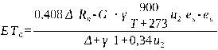 ahol:
|
Meteorológiai ellátási rés |
A csapadék és a standardizált kultúra-vízigény közötti hiány. Akkor növekszik, amikor a vizsgált időszakban a becsült ETc meghaladja a rendelkezésre álló csapadékot. |
Kumulált ETc-deficit |
A napi meteorológiai ellátási rések időbeli felhalmozódása. A maximális érték azt mutatja meg, mekkora volt a vizsgált időszak legnagyobb felhalmozódott különbsége a csapadék és a standardizált ETc között. Nem a teljes gyökérzóna vízmérlegének közvetlen mérése. |
Talajnedvesség |
A talajban adott időpontban jelen lévő víz mennyisége. A tanulmány térfogati talajnedvességként, többek között 10, 20, 30, 45, 60 és 75 cm mélységben mért adatokat használ. |
θ théta |
A térfogati talajnedvesség jele. A talajban lévő víz térfogatának és a vizsgált talajtérfogatnak az aránya; rendszerint m3/m3 vagy térfogatszázalék formájában adják meg. |
FC szabadföldi vízkapacitás |
A talaj azon víztartalma, amely a gravitációs vízelvezetés után, szabadföldi körülmények között visszamarad. A vizsgálatban a mintapont és a mélység alapján becsült referenciaérték. |
WP hervadásponti víztartalom |
Az a talajnedvességi határérték, amelynél a növény már nem képes elegendő vizet felvenni a tartós turgor fenntartásához. A vizsgálatban becsült alsó referenciaérték. |
AWC növény számára hozzáférhető vízkészlet |
A szabadföldi vízkapacitás és a hervadásponti víztartalom különbsége: AWC = FC - WP. Elméletileg azt a víztartományt jelzi, amely a két talajhidrológiai határ között a növény számára hozzáférhető. |
REW relatív kivonható víz |
A talajnedvességnek a két becsült talajhidrológiai határ közötti helyzetét kifejező arány. Képlete: REW = (θ - WP) / (FC - WP). A 0 és 1 közötti érték a két határ közötti állapotot jelzi; a 0 alatti és 1 feletti nyers értékeket a vizsgálat megőrizte, mert a mért nedvesség referenciahatárokhoz viszonyított helyzetét mutatják. |
HDIS aszályindex |
Az Országos Vízügyi Főigazgatóság operatív vízhiány-monitoring rendszerének olyan indexe, amely a vízhiány és a hőstressz együttes hatását jelzi. A REW-től és a kumulált ETc-deficittől eltérő, önálló monitoringmutató. |
OVF |
Országos Vízügyi Főigazgatóság. |
Hőterhelés és hőstressz |
A magas hőmérséklet növénytermesztésre gyakorolt kedvezőtlen hatása. A vizsgálatban a napi maximumhőmérséklet, a hőségnapok és a forró napok száma, valamint a tartós, csapadékszegény hőségperiódusok alapján értékelt faktor. |
Tmax napi maximumhőmérséklet |
Az adott nap során mért legmagasabb levegőhőmérséklet. A két évjárat hőterhelésének összehasonlításában a napi Tmax-görbék és azok metszéspontjai szerepelnek. |
Hőségnap |
Olyan nap, amelyen a napi maximumhőmérséklet eléri vagy meghaladja a 30 °C-ot. |
Forró nap |
Olyan nap, amelyen a napi maximumhőmérséklet eléri vagy meghaladja a 35 °C-ot. |
Fenológiai szakasz |
A növény fejlődésének szakmailag elkülönített időszaka, például a kelés, a bokrosodás, a virágzás vagy a szemfejlődés. |
Standardizált fenológiai naptár |
A két évjárat összehasonlításához mindkét évben azonos fejlődési szakaszokra és azonos időzítésre épített naptár. Ennek segítségével az ETc becslése nem változó fenológiai feltételek mellett hasonlítható össze. |
HU-SoilHydroGrids |
Magyarország háromdimenziós talajhidrológiai adatbázisa, melyet a Víztudományi és Vízbiztonsági Nemzeti Laboratórium üzemeltet. A kéziratban a mintapontokhoz és talajmélységekhez rendelt FC- és WP-referenciaértékek forrása. |
Termésátlag |
Egy meghatározott térségben vagy termelői körben mért termésmennyiség átlagos értéke. A kéziratban a KSH vármegyei adatai és a VSZT 2026-os időközi betakarítási adatai kerültek besorolásra a mintapontokhoz, majd egyszerű átlagot számítottunk. |
Időközi termésadat |
Még nem végleges, a betakarítás vagy az adatfeldolgozás lezárása előtt rendelkezésre álló adat. A 2026-os termésátlagok ezért a későbbi végleges adatok megjelenése után felülvizsgálhatók. |